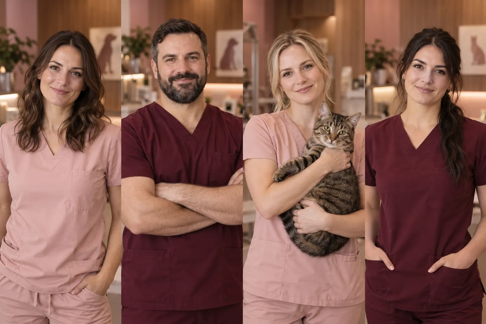

Náš tým
Zkušenosti, odbornost a láska ke kočkám.
Tři osobnosti.
Jedna společná péče.
Za každou návštěvou stojí spolupráce. Sdílíme si poznatky, navazujeme na předchozí péči a věnujeme vám čas, který potřebujete.
Zkušenosti, odbornost a láska ke kočkám.

Za každou návštěvou stojí spolupráce. Sdílíme si poznatky, navazujeme na předchozí péči a věnujeme vám čas, který potřebujete.